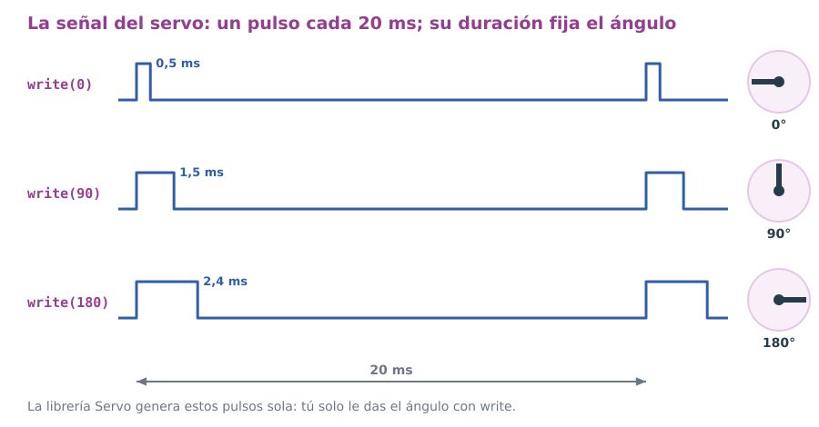
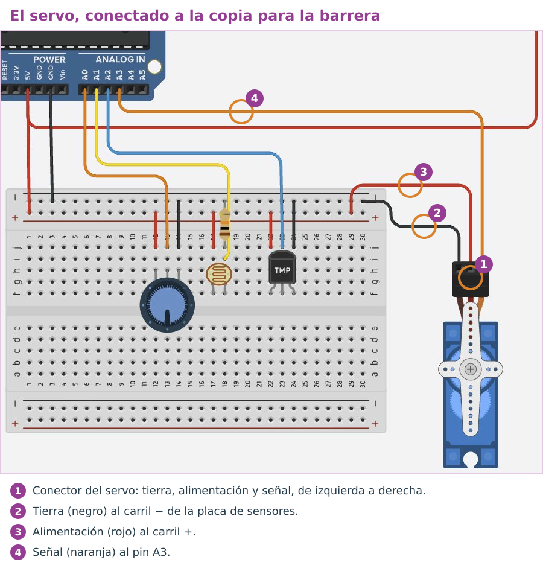
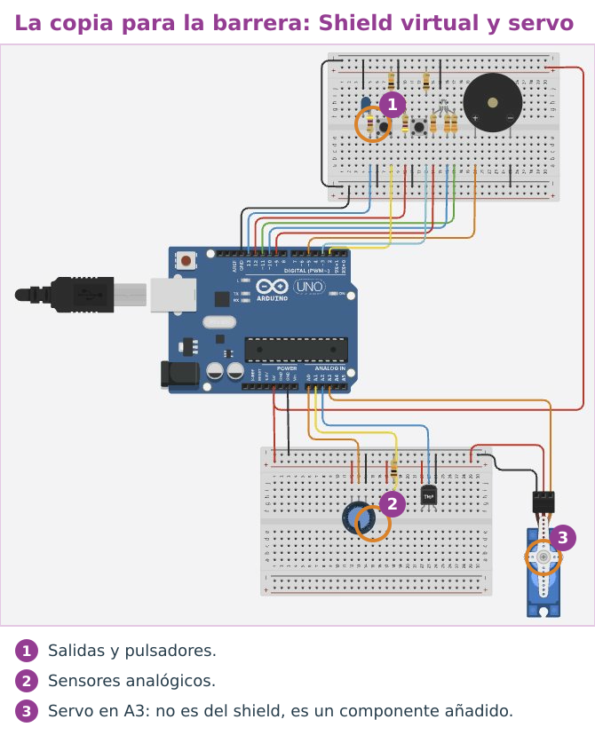
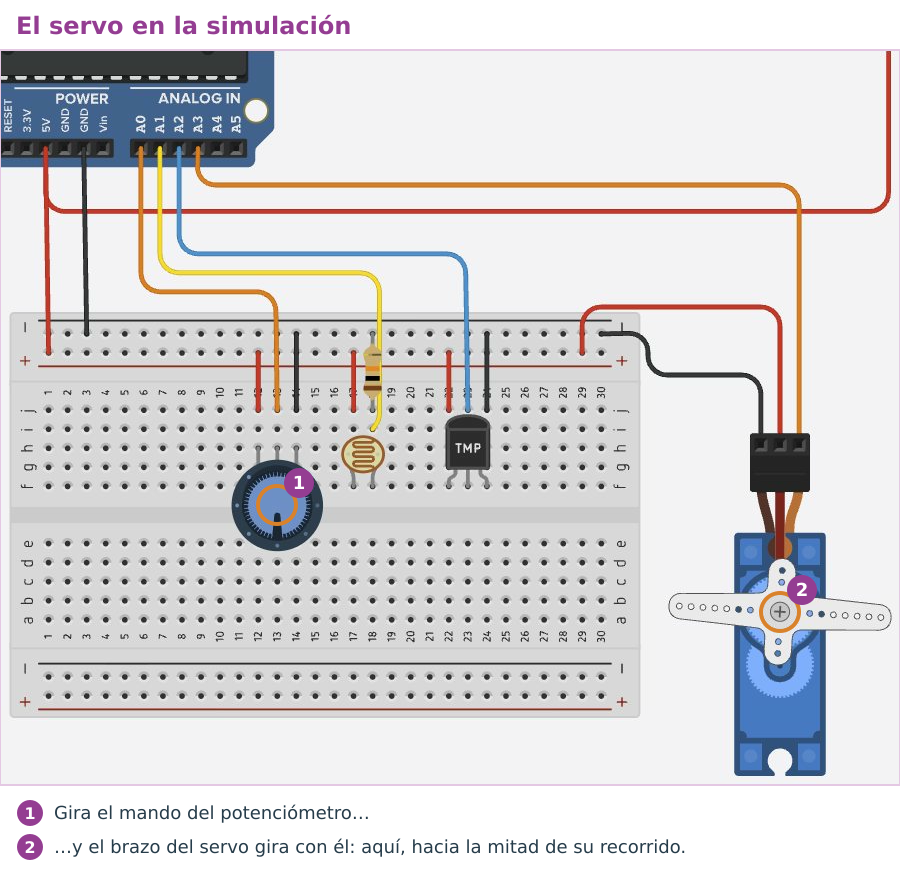

Qué vas a conseguir en esta página
Conocer cómo funciona un servomotor, moverlo a un ángulo con la librería Servo, hacer que se mueva despacio y controlarlo con un sensor. Con todo lo de la unidad, programarás la barrera de un aparcamiento.
Qué es un servomotor
Un motor normal gira sin parar mientras le llega corriente. Un servomotor (o servo), en cambio, gira hasta un ángulo concreto y se queda ahí, aguantando aunque intentes moverlo. Por eso se usa para barreras, timones, brazos robóticos o el movimiento de una cámara.
Dentro tiene un pequeño motor de corriente continua, unos engranajes que reducen la velocidad y aumentan la fuerza, un potenciómetro unido al eje que mide la posición real y un circuito de control. El circuito compara el ángulo que le pides con el que mide el potenciómetro y mueve el motor hasta que coinciden: es un sistema de control en lazo cerrado, como los de la página 1. Sistemas de control.
El del kit es un SG90, un microservo de 9 g que gira unos 180°. Tiene tres cables:
| Cable | Función | En el shield |
|---|---|---|
| Marrón | GND | patilla GND del conector A3 |
| Rojo | Alimentación (5 V) | patilla VCC |
| Naranja | Señal | patilla A3 |
Se enchufa directamente en el conector de tres patillas de A3, con el cable marrón del lado de la serigrafía GND. Si lo pones al revés no funciona, así que fíjate antes de encender.
Cómo se le dice el ángulo
El servo recibe por el cable de señal un pulso cada 20 ms. Lo que importa es lo que dura ese pulso: medio milisegundo lo lleva a un extremo, unos 2,4 ms al otro, y los valores intermedios, a las posiciones intermedias.

La librería Servo
Generar esos pulsos a mano sería complicado, pero no hace falta: Arduino trae una librería, un conjunto de funciones ya escritas, que lo hace por ti. Se usa en cuatro pasos:
| Paso | Código | Qué hace |
|---|---|---|
| 1 | #include <Servo.h> | Al principio del programa: incluye la librería. |
| 2 | Servo barrera; | Fuera de las funciones: crea un servo llamado barrera. |
| 3 | barrera.attach(A3); | En setup(): le dice en qué pin está. |
| 4 | barrera.write(90); | Donde quieras: lo mueve al ángulo indicado, de 0 a 180. |
Fíjate en la forma de barrera.write(90): el nombre del servo, un punto y lo que quieres que haga. Es como en Python cuando escribes lista.append(5): barrera es un objeto y write, uno de sus métodos. Si tuvieras dos servos, crearías dos objetos con nombres distintos.
Ejemplo: el servo pasa por cuatro posiciones
// El servo de A3 pasa por cuatro posiciones y se para un poco en cada una
#include <Servo.h>
const int PIN_SERVO = A3;
const int ESPERA = 1500; // milisegundos en cada posición
Servo barrera; // un objeto Servo por cada servo que uses
void setup() {
barrera.attach(PIN_SERVO); // a partir de aquí, la librería genera los pulsos en A3
}
void loop() {
barrera.write(0);
delay(ESPERA);
barrera.write(45);
delay(ESPERA);
barrera.write(90);
delay(ESPERA);
barrera.write(180);
delay(ESPERA);
}Con la librería Servo, los pines 9 y 10 pierden el PWM
La librería usa para sus pulsos el mismo temporizador interno que el PWM de los pines 9 y 10. En cuanto haces attach, no uses analogWrite en esos dos pines, que en el shield son el rojo y el azul del LED RGB: ya no gradúan y, además, desajustan el servo. Con un servo en marcha, enciéndelos y apágalos con digitalWrite; el verde (pin 11) sí conserva el PWM, salvo mientras suena tone(), que usa su temporizador: después de un pitido, llama a noTone() y repite el analogWrite del verde (o repítelo en cada vuelta de loop()).
Moverlo despacio
write manda el servo al ángulo pedido a toda la velocidad que puede. Una barrera de verdad sube despacio, así que hay que llevarla grado a grado, con una pequeña pausa entre uno y otro: un bucle for como los que usaste para el brillo de los LED.
Ejemplo: la barrera sube y baja despacio
// El servo sube de 0 a 90 grados poco a poco y vuelve a bajar: así se mueve una barrera suave
#include <Servo.h>
const int PIN_SERVO = A3;
const int BAJADA = 0;
const int SUBIDA = 90;
const int PAUSA_GRADO = 15; // milisegundos por grado: más pausa, movimiento más lento
Servo barrera;
void setup() {
barrera.attach(PIN_SERVO);
barrera.write(BAJADA);
delay(1000);
}
void loop() {
for (int angulo = BAJADA; angulo <= SUBIDA; angulo++) {
barrera.write(angulo);
delay(PAUSA_GRADO);
}
delay(2000);
for (int angulo = SUBIDA; angulo >= BAJADA; angulo--) {
barrera.write(angulo);
delay(PAUSA_GRADO);
}
delay(2000);
}Con PAUSA_GRADO = 15 ms, subir 90° tarda 90 · 15 = 1350 ms, algo más de un segundo. Ten en cuenta también lo contrario: el servo necesita tiempo para llegar. Si le mandas un ángulo y enseguida otro, puede que no llegue nunca al primero.
Conecta el servo a una copia de tu Shield virtual
Con los sensores de la página 6, tu Shield virtual ya tiene todo lo que lleva el shield. El servo no forma parte del shield: es un componente más del kit, que se enchufa en uno de sus conectores libres, el de A3. Por eso no se añade al Shield virtual, que tiene que seguir siendo igual que el shield. Para las prácticas de esta página y para la tarea de la barrera, haz una copia y conéctale el servo. Es lo que harás siempre que un montaje necesite algo que el shield no trae.

- En tus diseños, duplica el Shield virtual (rueda dentada → Duplicar) y llama a la copia Tarea SV1 - Barrera.
- Abre la copia y arrastra un Microservomotor a la derecha de la placa de sensores.
- Pasa el ratón por las tres patillas de su conector: de izquierda a derecha son tierra, alimentación y señal, el mismo orden que el conector A3 del shield.
- Une la tierra con el carril − de la placa de sensores, la alimentación con el carril + y la señal con el pin A3 del Arduino. En el kit no hacen falta cables: el conector del servo entra directamente en el de A3.

Práctica: el servo sigue al potenciómetro
No se entrega ni cuenta para la nota: sirve para practicar lo que necesitarás en las tareas y en el proyecto.
Este programa hace que el brazo del servo copie el giro del mando del potenciómetro, como una dirección asistida. Le faltan tres cosas: qué pin se lee, hasta qué ángulo llega la nueva escala y qué método mueve el servo. Rellena los huecos y pruébalo en tu copia Tarea SV1 - Barrera y en la placa. Haz en esa copia todas las pruebas de esta página: al final escribirás en ella el programa de la tarea.
Abrir el programa con huecos
Es el programa de la práctica con algunas partes borradas. Cada ____ es una palabra, un número o un signo que ya has visto en esta página. Cópialo, sustituye cada hueco por lo que falta y pruébalo. Intenta primero hacerlo sin abrir esto: se aprende mucho más.
// El potenciómetro (A0) mueve el servo (A3): el mando y el brazo giran a la vez
#include <Servo.h>
const int POT = A0;
const int PIN_SERVO = A3;
Servo brazo;
void setup() {
brazo.attach(PIN_SERVO);
Serial.begin(9600);
}
void loop() {
int lectura = analogRead(____);
int angulo = map(lectura, 0, 1023, 0, ____);
brazo.____(angulo);
Serial.print("Angulo: ");
Serial.println(angulo);
delay(20);
}Ver el programa completo
// El potenciómetro (A0) mueve el servo (A3): el mando y el brazo giran a la vez
#include <Servo.h>
const int POT = A0;
const int PIN_SERVO = A3;
Servo brazo;
void setup() {
brazo.attach(PIN_SERVO);
Serial.begin(9600);
}
void loop() {
int lectura = analogRead(POT);
int angulo = map(lectura, 0, 1023, 0, 180);
brazo.write(angulo);
Serial.print("Angulo: ");
Serial.println(angulo);
delay(20);
}Si el brazo tiembla en la placa, prueba a añadir un delay algo mayor: el potenciómetro baila un poco y el servo intenta seguir cada pequeño cambio.

Cuida el servo de verdad
- No gires el brazo con la mano: se rompen los engranajes de plástico.
- Si al llegar a un extremo zumba y se queda temblando, no llega a ese ángulo: usa uno algo menor (por ejemplo, 5 en lugar de 0).
- Se alimenta del USB, que da para un microservo. Si la placa se reinicia cada vez que el servo se mueve, el servo está pidiendo más corriente de la que llega: comprueba que el brazo no está atascado.
Prueba del shield con el servo
Este programa usa todo lo que has visto en la unidad a la vez: los pulsadores encienden los LED que tienen delante, el potenciómetro mueve el servo, la luz gradúa el verde del LED RGB, el zumbador pita al arrancar y el monitor serie muestra las lecturas. Sirve para comprobar que la placa, con el servo enchufado, y tu copia de Tinkercad funcionan: en Tinkercad, cambia el desplazamiento a 500.
Programa de prueba del shield con el servo
// Prueba del shield con el servo enchufado en A3: pulsadores, LED, LED RGB, zumbador, sensores y servo
#include <Servo.h>
const int SW1 = 2;
const int SW2 = 3;
const int ZUMBADOR = 5;
const int RGB_VERDE = 11; // con la librería Servo, 9 y 10 ya no admiten PWM; 11 sí
const int LED_ROJO = 12;
const int LED_AZUL = 13;
const int POT = A0;
const int LDR = A1;
const int SENSOR_T = A2;
const int PIN_SERVO = A3;
const int PULSADO = LOW;
const float DESPLAZAMIENTO = 0; // 0 con el LM35 del shield; 500 con el sensor de Tinkercad (TMP36)
Servo servo;
void setup() {
pinMode(SW1, INPUT);
pinMode(SW2, INPUT);
pinMode(LED_ROJO, OUTPUT);
pinMode(LED_AZUL, OUTPUT);
pinMode(RGB_VERDE, OUTPUT);
servo.attach(PIN_SERVO);
Serial.begin(9600);
tone(ZUMBADOR, 880, 200); // un pitido al arrancar
}
void loop() {
digitalWrite(LED_AZUL, digitalRead(SW1) == PULSADO); // SW1 enciende el LED azul, que tiene delante
digitalWrite(LED_ROJO, digitalRead(SW2) == PULSADO); // SW2, el rojo
int pot = analogRead(POT);
servo.write(map(pot, 0, 1023, 0, 180)); // el potenciómetro mueve el servo
int luz = analogRead(LDR);
analogWrite(RGB_VERDE, map(luz, 0, 1023, 0, 255)); // más luz, verde más brillante
analogRead(SENSOR_T); // lectura de descarte
delay(10);
float grados = (analogRead(SENSOR_T) * 5000.0 / 1023 - DESPLAZAMIENTO) / 10;
Serial.print("Pot: ");
Serial.print(pot);
Serial.print(" Luz: ");
Serial.print(luz);
Serial.print(" Temperatura: ");
Serial.print(grados, 1);
Serial.println(" C");
delay(100);
}digitalWrite(LED_AZUL, digitalRead(SW1) == PULSADO) aprovecha que una comparación da true o false, que para digitalWrite valen lo mismo que HIGH y LOW.
Si algo no funciona
| Lo que ves | Qué compruebas |
|---|---|
| El servo no se mueve | ¿Has hecho attach en setup()? ¿Está el conector con el marrón en GND? |
| Se mueve a saltos o no termina el recorrido | Dale tiempo: una pausa de unos 15 ms por grado. |
| El rojo o el azul del LED RGB no se gradúan | Con la librería Servo, los pines 9 y 10 no tienen PWM: usa digitalWrite. |
| La placa se reinicia al mover el servo | El servo pide demasiada corriente: comprueba que el brazo gira libre. |
El compilador dice que no conoce Servo | Falta #include <Servo.h> en la primera línea. |
Tarea SV1 · La barrera del aparcamiento
Programa la barrera de un aparcamiento con el servo, los dos pulsadores y el LED RGB, que hace de semáforo:
- Al empezar, la barrera está bajada (servo en
BAJADA) y el semáforo en rojo. - Cuando el vigilante pulsa SW1, el semáforo se pone en verde y la barrera sube despacio hasta
SUBIDA(90°). - Se queda abierta 5 segundos.
- El semáforo se pone en ámbar (rojo y verde a la vez) durante 1 segundo y después en rojo, y la barrera empieza a bajar despacio.
- Seguridad: SW2 hace de fotocélula. Si se pulsa mientras la barrera baja, es que hay un coche debajo: la barrera se para y el ciclo vuelve a empezar desde el verde, como si el vigilante hubiera pulsado otra vez.
Usa constantes para los pines, los ángulos, la pausa por grado y los tiempos, y escribe al menos dos funciones propias (por ejemplo, subir() y bajar()). Recuerda que, con el servo en marcha, el rojo y el azul del LED RGB solo se encienden o se apagan. En Tinkercad: tu copia Tarea SV1 - Barrera, la que preparaste con el servo al principio de la página.
Está conseguida cuando… en la placa, la barrera sube y baja despacio con el semáforo en el orden correcto y los tiempos pedidos, al pulsar SW2 mientras baja vuelve a subir, y el programa usa constantes y al menos dos funciones propias.
Entrega. Guarda el programa como tarea_sv1 (Archivo → Guardar como...) y graba con el móvil un vídeo corto de la placa haciéndolo todo, con el papel de tus iniciales y tu curso a la vista; llama al vídeo tarea_sv1. Súbelos a la tarea Colección de programas (Arduino) de Moodle con Editar entrega y Guardar cambios, igual que en la tarea SD1, sin pulsar todavía Enviar tarea.
Lo que tienes que saber de esta página
- Un servo gira hasta un ángulo y se queda ahí; por dentro es un control en lazo cerrado con un potenciómetro.
- Cables del SG90: marrón a GND, rojo a 5 V, naranja a la señal. En el shield va en el conector de A3.
- Librería Servo: #include <Servo.h>, Servo nombre;, nombre.attach(pin) en setup() y nombre.write(ángulo), de 0 a 180.
- Para moverlo despacio, un bucle que avanza grado a grado con una pausa (unos 15 ms por grado).
- Con la librería Servo no se usa analogWrite en los pines 9 y 10 (rojo y azul del RGB): solo digitalWrite.